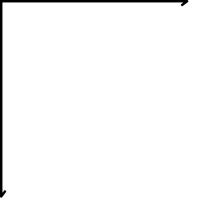
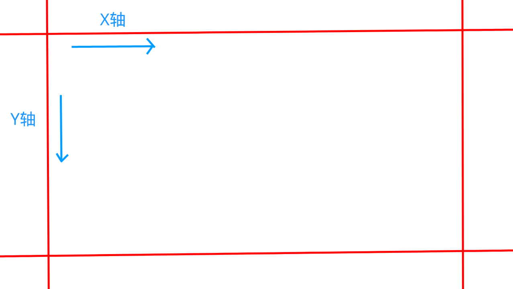
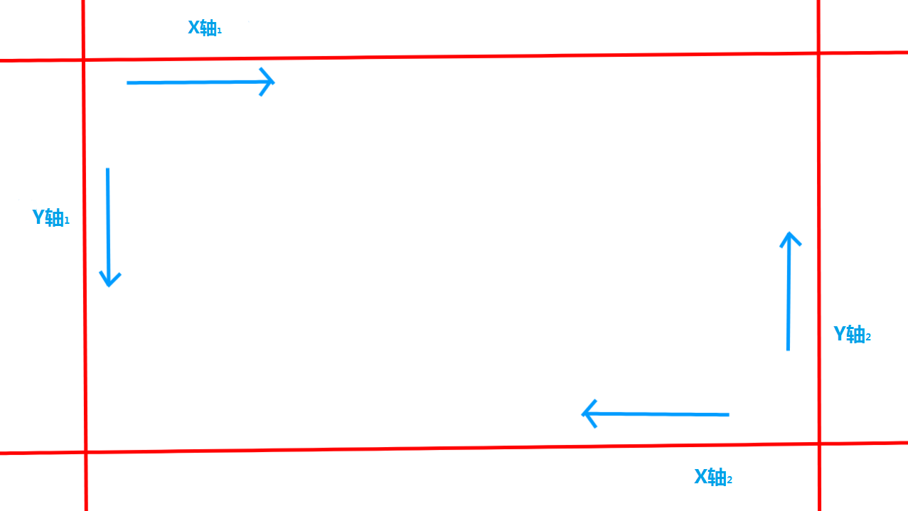

图片控件
提示：以下属性仅适用于 image 控件类型。
属性
| 属性 | 属性名 | 值 | 默认值 | 描述 |
|---|---|---|---|---|
| texture | 纹理路径 | 字符串：路径 | 图片所在的路径[1] 例如： | |
| color | 控件颜色 | 字符串：列举 或 数组：RGB数组 | "white" | 改变该控件颜色。颜色不会传递到子控件。
值作为字符串时，可能为：
值作为“[R,G,B,A]”数组时，可能为：
RGB转为RGB数组 |
| fill | 填充 | 布尔值 | false | 图片是否填满至控件大小 |
| tiled | 平铺 | 布尔值 或 字符串：列举 | false | 图片是否平铺或者图片平铺的方向。 [2]
作为布尔值并且为 true 时： 图片将从控件左上角向右下方平铺。 （超出部分会被忽略隐藏） 作为布尔值并且为 false 时： 图片不会平铺。 作为字符串时：详见 平铺方向 > |
| tiled_scale | 平铺缩放 | 数组：矢量[x,y] | 图片的平铺的缩放大小。[3] | |
| nineslice_size | 九宫格切片纹理 | 浮点数、数组：矢量[x,y]、数组：矢量[x1,y1,x2,y2] | 0 | 详见 九宫格切片纹理 > |
| uv | UV | 数组：矢量[x,y] | [0,0] | 图片映射的初始位置，改变基于左上角的映射位置。 uv偏移方向如下：  |
| uv_size | UV大小 | 数组：矢量[x,y] | [0,0] | 图片映射的大小。 |
| base_size | 基本大小 | 数组：矢量[x,y] | 图片的基本大小。 | |
| bilinear | 双线性 | 布尔值 | false | 是否使图片以双线性滤波形式显示。 双线性是一种非线性滤波器，它可以达到保持边缘、降噪平滑的效果。 |
| grayscale | 灰白滤镜 | 布尔值 | false | 图片是否使用灰白滤镜显示。 |
| clip_ratio | 剪辑比例 | 浮点数 | 1 | 图片的剪辑比例。 |
| clip_direction | 剪辑方向 | 字符串：列举 | 图片开始剪辑的方向。 列举的值有： center 中心 up 上 down 下 left 左 right 右 | |
| clip_pixelperfect | 剪辑精准到像素 | 布尔值 | true | 图片剪辑是否精准到像素。 |
| keep_ratio | 保持比例 | 布尔值 | true | 图片是否保持比例。 |
| allow_debug_missing_texture | 允许调试丢失材质 | 布尔值 | true | 图片是否允许调试丢失材质。 当显示的图片不存在时，是否使用 |
| force_texture_reload | 强制重新加载纹理 | 布尔值 | false | 是否在强制加载纹理。 |
| zip_folder | 压缩包路径 | 字符串：路径 | 图片在压缩包中的路径。 例如： | |
| texture_file_system | 系统路径 | 字符串：路径 | 图片在压缩包中的路径。 例如： 实际路径会因系统而异！ |
- 路径不存在或无法解析图片时会显示为紫黑材质
- 图片使用平铺时，
fill 属性没有作用。 "tiled_scale": [32,32] ，如果图片像素大小为 16 x 16 ，那么在图片平铺的情况下，图片像素缩放到 32 x 32。
平铺方向
当
| 字符串 | 描述 |
|---|---|
| x | 图片将从控件正左方 向 X轴右方平铺。（如果图片在Y轴有剩余部分，会把图片高度拉伸至控件高度） |
| y | 图片将从控件正上方 向 Y轴下方平铺。（如果图片在X轴有剩余部分，会把图片宽度拉伸至控件宽度） |
| xy | 图片将从控件左上方 向 控件右下方平铺。 |
| yx | 图片将从控件左上方 向 控件右下方平铺。 |
九宫格切片纹理
九宫格切片纹理即图片的九宫格切片，一种将图片分成 9 块的方法，因此称为九宫格切片纹理。使用九宫格切片纹理调整图片大小后，图片角落将保持同等大小，内部部分将用于拉伸。
九宫格切片纹理的值不能为负数。
接下来，我们仔细讲解九宫格切片的每种类型
无九宫格切片纹理
在没有"nineslice_size"属性的情况下，没有无九宫格切片。九宫格切片纹理
格式：
示例：
设图像X轴和Z轴九宫格切片的角落大小。【X轴 = Y轴】
矢量[x,y]九宫格切片纹理
格式：
示例：
设图像X轴和Z轴九宫格切片的角落大小。【 X轴 和 Y轴 不关联（影响） 】
矢量[x1,y1,x2,y2]九宫格切片纹理
格式：
示例：
设图像两角的X轴和Z轴九宫格切片的角落大小
【 左上角：X1 和 Y1；右下角：X2 和 Y2 】
制作动图
那么如何制作动图？
1. 首先，图片如果是Gif图片需要折分并转换为其它图片格式
2. 然后再将每张图片合并为一张图片（水平拼接），例如下方图片
![图片]()
将图片存储到资源包内的一个位置
3. 在控件内部添加属性1. 不要照抄，这里仅做示范，可能会与你的代码不同
2. texture中填你刚存放图片的资源包路径
并没有这么简单，上面只是一个静态图片控件
4. 写个动画控件在动画控件填入
动画控件无需使用
我们逐次填入下列属性：
initial_uv：直接填
easing：直接填
frame_count：拼接的图片有多少张就填多少，例如
fps：数字越大，播放越快，例如
frame_step：拼接的每张图片有多长，就填多少，例如
填完的效果可能这样的。
例如：
在这里，uv的值是字符串
并且值必须是"@动画控件名称"
7. 检查代码格式是否正确
好了，动图控件已经完成，记得引用控件才能显示在屏幕上哦
下面是完整的示例代码
外部 JSON 文件属性
在这些文件打开一看，却装着 JSON UI 的属性，到底是怎么回事呢？我们来研究下吧！
在外部 JSON 文件声明属性能直接定义图片的属性，无需多次在 JSON UI 文件中声明属性！
打开文件，内部代码格式为
那要如何创建一个图像文件呢？
只要在创建一个与图像重名的 .json 文件即可，
例如：